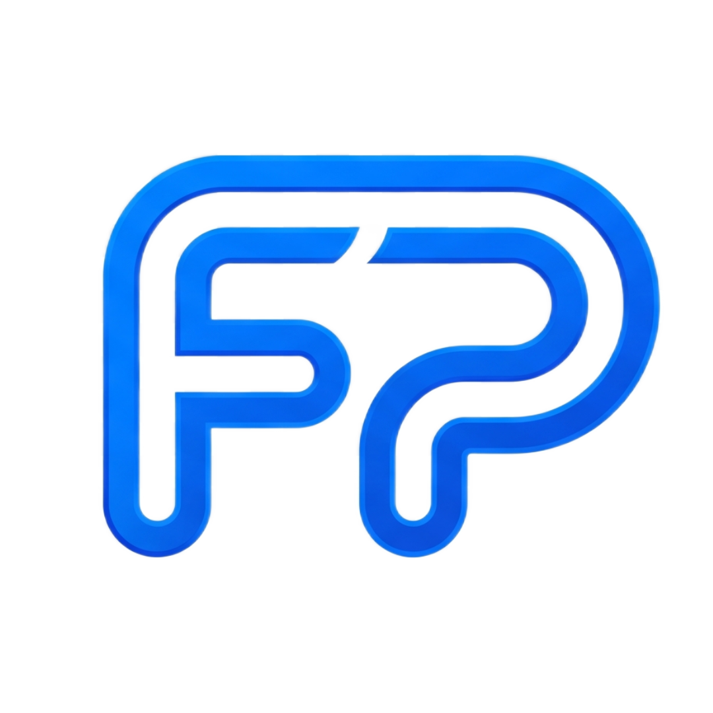
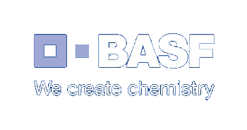
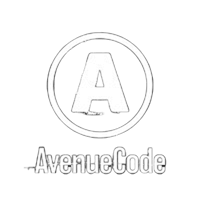

Web Development
Scalable web applications with .NET, ASP.NET Core, Angular and modern frameworks.

Fernando ParmezaniSenior Software Engineer with 18+ years of experience delivering robust, high-performance web applications using .NET, Angular, cloud platforms and modern software architecture.



About Me
I am a Senior .NET Developer and Tech Lead specialized in backend development, enterprise systems, API integrations, cloud-ready applications and modernization of legacy platforms.
Scalable web applications with .NET, ASP.NET Core, Angular and modern frameworks.
REST APIs, third-party integrations, secure authentication and enterprise workflows.
Architecture definition, mentoring, code quality and delivery ownership.
Azure, AWS, CI/CD pipelines, Docker and production deployment support.
Technical Expertise
Professional Experience
View full timeline →Enterprise application development, legacy modernization, microservices and backend systems.
Development and support of APIs for insurance benefits, Angular widgets, CI/CD and Azure DevOps.
Led development team, maintained legacy systems and delivered .NET Core projects.
Featured Projects
API platform for insurance benefit requests with authentication, validation and integrations.
Backend system for financial contract registration and data processing workflows.
Migration and modernization of legacy .NET applications into cleaner, maintainable architectures.
Executive dashboards with KPIs, charts, operational indicators and real-time data visualization.
Contact
Available for senior .NET backend, architecture, modernization and technical leadership opportunities.